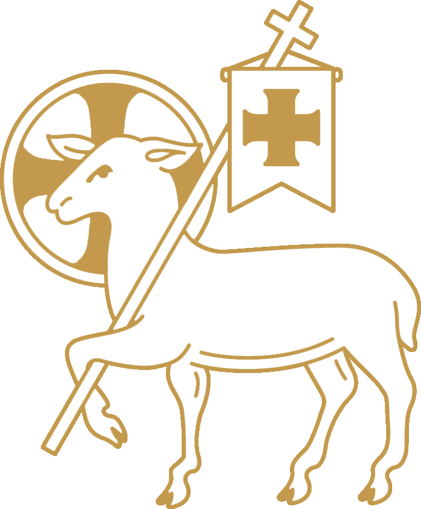
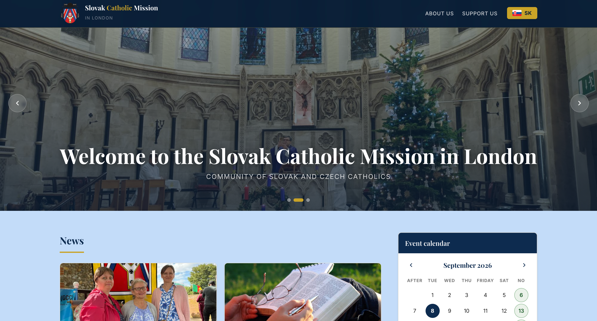
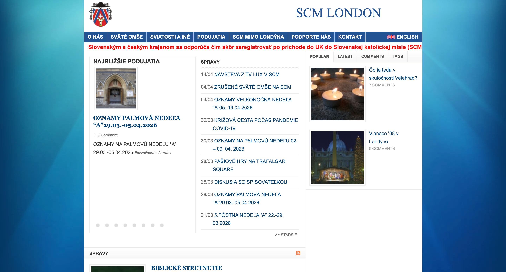

Faithful IT for parishes, dioceses and orders.
Renovātiō Latin, noun
Renewal; a making new again.
Which is our purpose: to transform your websites and IT systems.

A priest's focus is his parish, not the parish website.
Most priests we speak to are occupied with the demanding duty to shepherd their parish and care for the spiritual wellbeing. The last thing in their mind is the upkeep of the parish website.
However, the online presence of the Church is increasingly growing more important as the world becomes digitised. Often the first encounter which many will have with Catholicism is online.
When a site is out of date, broken or unsecure, that first impression is received badly, and nobody in the parish ever hears about it. Therefore, parishes must take action to update and maintain their website but many do not have the time or resources to do so.
Our aim is simple: to remove the technology burden and enable the parish to truly flourish.
See how we help“We all need to learn how to engage with the digital world in a human way, as an integral part of our education in the faith and in a life lived according to the Gospel. Indeed, we must consider the digital world as a new continent to be evangelized, one that requires generous missionaries who are mature in the faith.”
The way we work, and why.
Working towards the common good
We are not driven by profit alone. We want every Catholic church to be up to date and welcoming to those seeking the truth.
We are transparent
We build things that last so you're not paying twice, and we're honest about what you actually need and what it is going to cost.
Enabling the parish team
We don't want to own your website. We will train your parish team to look after it and make their own updates, so you're never dependent on us.
Real communities, served better online.
Here's who we've worked with.


Before
- Compromised by spam injections
- Hijacked accounts, ~238k bot subscribers
- Dated, hard-to-update design
After
- Cleaned, secured and hardened
- Modern, mobile-friendly redesign
- Ongoing monitoring in place
A small team that answers the phone.
By Catholics for Catholics, with a shared mission to serve Christ.
Elias Jan Akbari
Designs and builds what you need, then keeps it running. Websites, systems, servers and the kit behind them.
Tim Hopkins
Your first point of contact. Works out what you need, agrees it in writing, and stays with you afterwards.
 Let's talk
Let's talk
Tell us what's not working.
A short, no-pressure call. We'll tell you if we can help and what it would look like.
Book a call